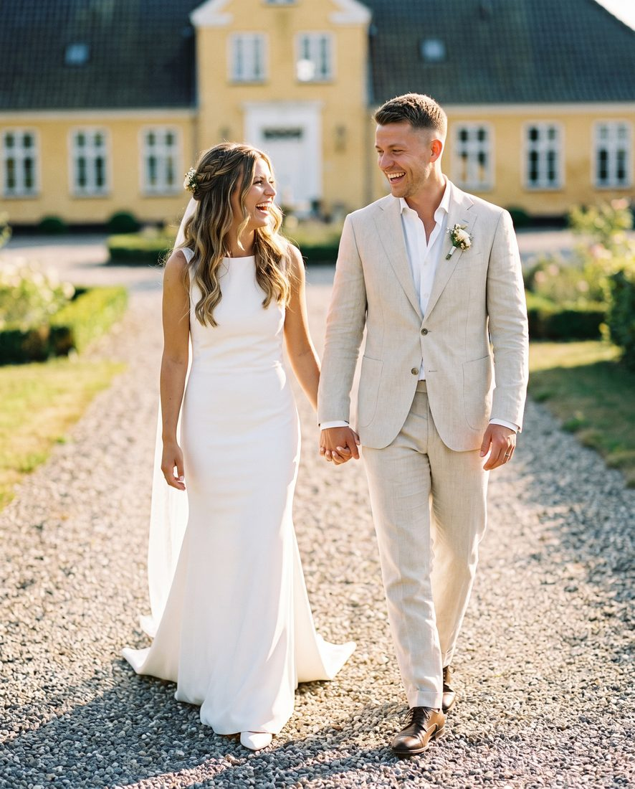

Bruden: blødt, gennemtænkt og personligt
Den store bevægelse i 2026 er væk fra det stramme og overstylede. Brudens hår skal se gennemtænkt ud, men stadig være til at have på hele dagen. Inspirationen kommer fra romantiske, gammeldags frisurer, men med levet tekstur og naturlig bevægelse.
Den bløde opsætning
Opsætningen er tilbage i stor stil: blødt formede knolde, moderne franske twists og en lav, romantisk chignon i nakken med løse lokker omkring ansigtet. Den holder formen til kirken og gør sig godt på billederne, både forfra og bagfra.
Halvt oppe, halvt nede
Stadig en favorit, fordi den giver det bedste fra begge verdener: struktur til vielsen og bevægelse til festen. Vi ser løftede kroner, løse twists, små fletninger og naturlige bølger.
Glansfulde, løse bølger
Bølgerne bliver mere flydende og naturlige, med glans frem for stramme krøller. Det klæder især mellemlangt og langt hår, og det passer perfekt til et nordisk, enkelt bryllup.
Den bouncy blowout
Inspireret af den røde løber: sundt, skinnende hår med blød volumen og bølger, der rammer ansigtet. Tidløst og moderne på samme tid.
Pynten: fra blomster til smykker
Boho-blomsterkransen træder et skridt tilbage for mere skulpturelle hårnåle, perler og detaljer i metal. Friske blomster sat diskret i en opsætning passer dog stadig rigtig godt til den nordiske stil.

Gommen: naturlig tekstur frem for voks
Også gommens hår bliver mere afslappet. De stive, blanke frisurer afløses af matte finishes og naturlig tekstur.
- Textured crop: korte sider og tekstur på toppen. Moderne, nemt og flot til jakkesæt.
- Blød fade: en diskret overgang i siderne, der ser skarp ud uden at virke stram.
- Textured quiff: løft foran og lidt længde på toppen. Klassisk med et moderne twist.
- Længere hår og bølger: til gommen, der har ladet håret gro. Perfekt til et bryllup udendørs.
En god tommelfingerregel er at blive klippet en til to uger før brylluppet, så klippet når at falde på plads. Husk også skægget.
Sådan planlægger du bryllupshåret
- Book en prøveopsætning i god tid, så I sammen kan finde looket, før dagen oprinder.
- Tag billeder med af kjolen, pynten og din inspiration.
- Tænk makeup med, så hår og makeup hænger sammen. Vi kan lægge makeup samme dag.
- Book tidligt, især hvis brylluppet ligger i den travle sommer.